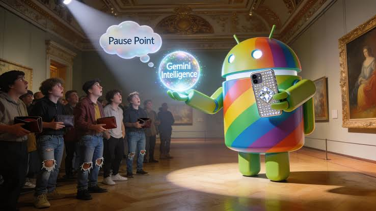
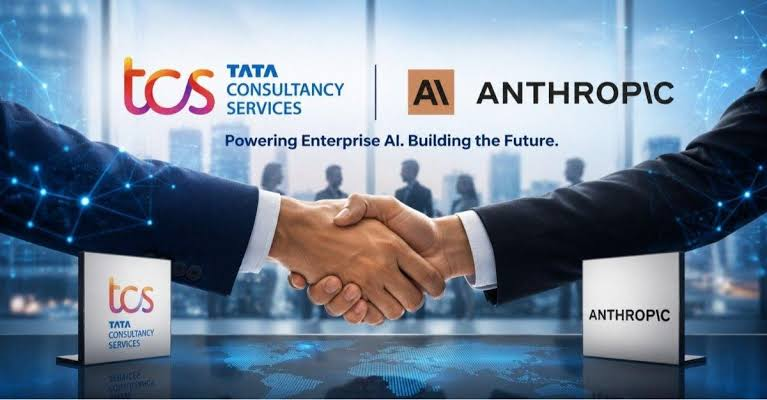
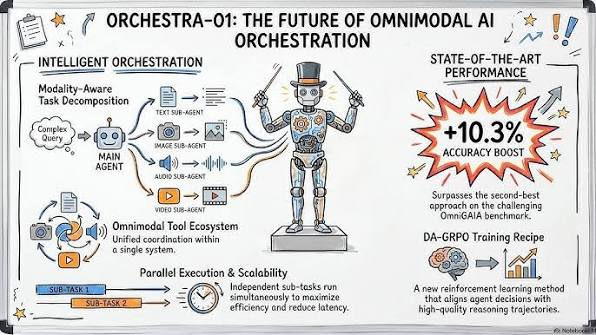
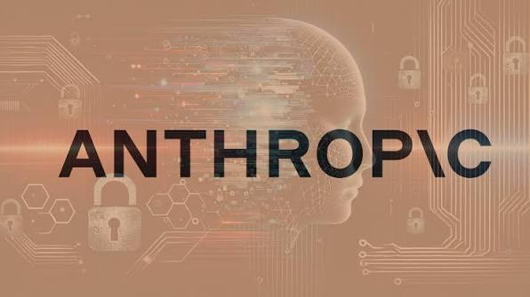
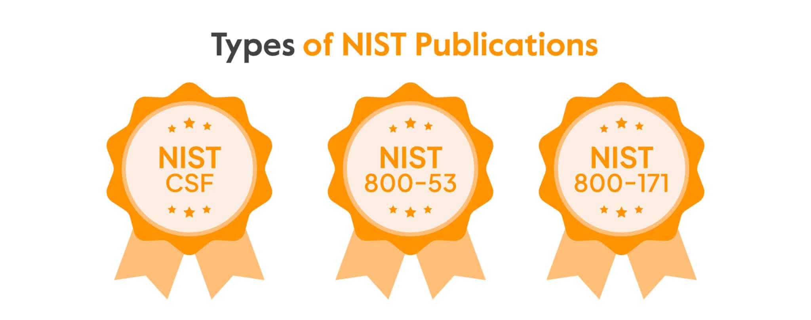
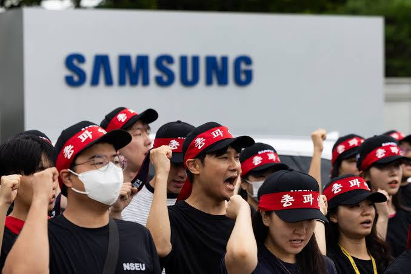

When the U.S. government suspended Fable 5 and Mythos 5, then let them back online three weeks later, it exposed what the industry already suspected: model access is now a policy switch, not a market outcome. Any enterprise betting its roadmap on a single frontier model just watched a live preview of what that switch looks like.
Read the full breakdown →
OpenAI unveiled a next-gen model built for coding, science, and cybersecurity work, paired with a full voice companion called Sol Voice. Frontier labs are now openly competing on agentic technical work, not chat.
Full story →
OpenAI pulled GPT-4.5 from ChatGPT, migrating live conversations to GPT-5.5 without asking. If your workflows or custom GPTs were tuned to a specific model, the ground just moved.
Full story →
Anthropic calls it the most agentic Sonnet yet — sharper planning, real browser use, real terminal use, built for professional work rather than demos. Coding and agent tasks are now the metric that matters.
Full story →
Google folded Gemini 3.5 Live Translate into a June rollout alongside a wave of Android 17 AI features. Translation built into the OS is the clearest "AI helps me today" moment consumers have gotten in months.
Full story →
OpenAI pushed its new image model straight into the API and Codex, no separate wrapper needed. Every app builder now has a first-party image engine next to their code.
Full story →
OpenAI renamed its experimentation surface to put prompts, not chat, at the center. Small rename, real signal: prompting is being treated as its own discipline.
Full story →
OpenAI opened the door for developers to apply to its flagship event. DevDay usually previews where the platform goes next — worth watching more than attending.
Full story →
The new release gives teams a structured way to work with Claude together, not just solo. AI tools keep sliding from personal assistant toward shared workspace infrastructure.
Full story →
Anthropic's new workbench for scientists ships with auditable artifacts and flexible compute built in. Vertical research-grade AI is becoming its own product category.
Full story →
Anthropic confirmed Fable 5 will come back online worldwide, alongside a proposal with major partners to score jailbreak severity industry-wide. Access is now a switch, and everyone in the room knows it.
Full story →
Google's recap frames its AI push as platform-wide, baked into the OS rather than one assistant app. When the assistant is the operating system, "which app" stops being the right question.
Full story →
New partnerships with TCS and DXC target regulated industries, alongside a Seoul office expansion. Enterprise distribution and regional footholds are now as strategic as the models themselves.
Full story →
Frontier models and Codex are now generally available through AWS. Cloud distribution decides adoption at scale as much as model quality does.
Full story →
Logistics, cybersecurity, and fintech led a strong funding stretch in India. Capital keeps flowing into AI-adjacent software even as the broader funding mood turns cautious.
Full story →
TechCrunch's running 2026 layoff tracker keeps logging companies that cite AI as part of their rationale. Investment and workforce cuts are happening at the same companies, at the same time — that tension isn't going away.
Full story →
BrainAgent, EHR-Complex, BenchX, PHOEBI, and Expresso-AI each tackle a different slice of clinical reasoning, bias, and diagnosis. Medical AI is graduating from generic demos into domain-specific evaluation, fast.
Full story →One model now understands, generates, and edits scientific images instead of needing three separate tools. That consolidation alone could meaningfully speed up research pipelines.
Full story →
This week's roundup leaned on autonomous reasoning agents, bias auditing, and medical-agent evaluation over raw scaling papers. Reliability is becoming as prestigious as capability, at least in the literature.
Full story →
Both papers dig into agent planning and how plans adapt mid-task. Agent orchestration is quietly becoming its own research subfield.
Full story →
New work on sample-selection bias and model collapse adds to a growing pile of failure-mode research. The field is shifting from "can it do this" to "can it keep doing this reliably."
Full story →
Anthropic confirmed the U.S. government directed a suspension of access to Fable 5 and Mythos 5. It's a concrete, dated example of a government reaching directly into frontier model availability.
Full story →
Anthropic, Amazon, Microsoft, and Google are working on a common way to score how bad a jailbreak actually is. Shared standards beat each company grading its own homework.
Full story →
A new mathematical proof from NIST supports monitor-and-update security models for AI instead of static sign-off. Oversight is catching up to a basic truth: models change after deployment.
Full story →The Economist reported growing Western political resistance to AI infrastructure, including data-center protests and calls for sector bans. This is showing up in local governance and national polling now.
Full story →Anthropic's public response to the government-directed suspension turned a technical access issue into one of the week's most visible AI policy disputes. Expect more of this — access is now a lever regulators will pull.
Full story →The Economist puts a number on the backlash: nearly $100 billion in infrastructure disrupted, with roughly 40% of surveyed voters open to a sector ban. Social license may be the real bottleneck now, not compute.
Full story →
With chipmaking profits up on AI demand, South Korean workers reportedly threatened a strike for a bigger cut. AI's economic upside is arriving faster than a plan for who shares in it.
Full story →The suspension and restoration of Fable 5 and Mythos 5 is the clearest case yet of a government directly switching frontier model access on and off. It didn't happen because of a market shift, a safety failure, or a competitive move — it happened because a regulator decided it should. Over the next six months, expect every major lab to start quietly building contingency plans for the same scenario, and expect enterprise customers to start asking for them. Multi-model architecture stops being a cost-optimization tactic and becomes a resilience requirement. Procurement conversations that used to be about price and latency will start including a line item for "what happens if this gets switched off." The labs that can answer that question convincingly will win enterprise trust that has nothing to do with benchmark scores.
Deep dive →Nearly $100 billion in AI infrastructure work has already been disrupted by public opposition, and roughly 40% of surveyed voters say they'd support banning AI in at least one sector. That's not a fringe number anymore — it's a mainstream political position, and it's showing up in local governance decisions on data centers right now. Over the next two quarters, watch for infrastructure buildout timelines to slip in specific jurisdictions, for capex guidance to start including political-risk caveats, and for at least one high-profile project to be shelved or relocated because of local opposition. The industry has spent years optimizing for compute constraints. It's now facing a constraint that no amount of GPU supply solves: whether the public wants the building next door.
Deep dive →Claude Sonnet 5 and GPT-5.6 Sol both shipped this stretch with the same pitch: better planning, better terminal and browser use, better real-world task completion. Neither lab led with a benchmark number. That's the tell. Competitive differentiation among frontier labs has quietly moved away from raw capability metrics and toward "can this thing actually finish a multi-step job without supervision." Over the next six months, expect developer tooling to become the real battleground — SDKs, agent frameworks, and orchestration layers will matter as much as the underlying model. The labs that win won't be the ones with the best model card. They'll be the ones whose agents ship the most working code and close the most tickets, unsupervised, this quarter.
Deep dive →This got treated in some corners like a platform-direction signal worth parsing line by line. It's an application window opening, months before any actual announcement exists to react to. There is nothing here yet except a form.
The headline number got shared as a single, unified market signal. The underlying claim traces to one social-media summary post, not a primary funding database, and it bundles logistics, cybersecurity, and fintech deals that have little in common beyond happening the same week.